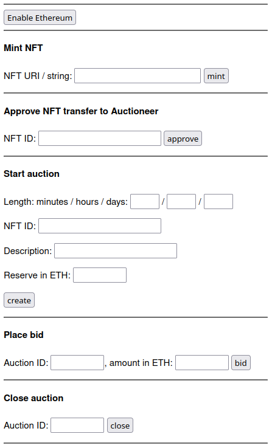

Background
Writing this homework will require completion of the following assignments:
Auctioneer
We are going to use your Auctioneer contract, from the dApp Auction (md) assignment. You will also need your NFTmanager contract, from the Ethereum Tokens (md) assignment, as well. If you did not get yours working, then contact the course staff, and we can deploy them for you to use. Otherwise, deploy your Auctioneer contract to the blockchain, and save the contract address, as it will be needed below.
HTML and Javascript
The intent is for you to start with the web site that was provided to you in the dApp Auction (md) assignment, and add some features. The URL of that web site is on the Collab landing page – you can just save that as a new HTML file, which you will want to name auctions.html. Note: you have to view that page with an address else most of the relevant code will not be shown. The link to that page with an address is also on the Collab landing page. You are going to create a few web forms, each of which will call a different Javascript function. Those forms – and paired functions – will perform the various actions that we need to perform on the Auctioneer: minting new NFTs, starting a new auction, closing an auction, and bidding on an auction.
We want to ensure that any viewer of this web page has MetaMask properly installed. The following code will do that:
<script>
if ( window.ethereum === undefined )
window.alert("Please install MetaMask; this page will not work properly without that extension installed");
</script>
This is useful as it will give a warning to those using other browsers, or those on Chrome without the MetaMask extension installed, that the site won’t work properly. In a fully developed web site, we would display the rest of the page differently if it is run without MetaMask. For this assignment, you should just display that warning. It’s fine for this assignment if the rest of your page does not display correctly without MetaMask installed. You can put this code right after the <body> opening tag.
The first thing a user has to do is enable the MetaMask extension to use the site; this is usually phrased as “connecting to MetaMask”. To do this, we add the following code to our HTML file (adapted from here).
<button class="enableEthereumButton">Enable Ethereum</button>
<script>
const ethereumButton = document.querySelector('.enableEthereumButton');
ethereumButton.addEventListener('click', () => {
// will start the metamask extension
ethereum.request({ method: 'eth_requestAccounts' });
});
</script>
This connection will persist through a page reload, and – on some operating systems at least – will persist thorough a browser restart.
The expectation is that any user will click on that button to connect to MetaMask. You do not need to handle the case when a user tries to use the rest of the page without first connecting via this button.
Web3.js library
We could interact with MetaMask directly, but using web3.js, which we are familiar with, is going to make life much easier – it will do all the encoding of parameters into calls, etc.
Previously, we defined the web3 variable as such (URL is on the Collab landing page):
let web3 = new Web3('URL');
We are now going to add a line:
let web3 = new Web3('URL');
let web3mm = new Web3(window.ethereum);
You will notice that we are creating TWO connections to the blockchain. The first connection is through the normal URL as was done in the DAO & web3 (md) assignment and as is done in the auctions.php page that you are basing your code off of; that URL is on the Collab landing page. This first connection is read-only. The second connection is through MetaMask, which injects the window.ethereum object, and Web3.js can just connect via that. We will be able to send transactions through the second connection.
The reason we are doing two connections is because the first one supports subscriptions, which is what allows the table to be updated upon an event emission – you did that in the DAO & web3 (md) assignment, and the auctions.php does that as well. However, that first connection does not allow sending transactions to the blockchain. The second connection, which is through MetaMask, does not support subscriptions (so no automatic updating of the tables), but does allow sending transactions to the blockchain.
As both are wrapped in the Web3 constructor, they operate the same way.
As a general rule, any one Javascript function should use only one of those connections, as they may be slightly out of sync with each other (the MetaMask one has about a 5 second delay, for example). If you are sending transactions to the blockchain, you have to use the web3mm one. Otherwise, use the web3 one. As you will only have four functions that send transactions to the blockchain, only those four will use web3mm.
Likewise, we need an auction contract interface that connects through the web3mm connection. Currently there is this line of code in the HTML file:
auctionContract = new web3.eth.Contract(auctioneerAbi,auctioneerContractAddress);
We are going to add a line:
auctionContractmm = new web3mm.eth.Contract(auctioneerAbi,auctioneerContractAddress);
If a function is using the web3mm connection, then it should use the auctionContractmm contract interface.
HTML and Javascript
Below is an example HTML form and associated Javascript function. This will call the mintNFT() function on your smart contract.
<script>
const mintNFT = async() => {
try {
const eth_coinbase = await web3mm.eth.getCoinbase();
var str = document.getElementById('nftstring').value;
await auctionContractmm.methods.mintNFT(str).send({from:eth_coinbase, gas:1000000, gasPrice:100000000000});
const nftid = await auctionContractmm.methods.lastMintedNFT(eth_coinbase).call();
const nfturi = await auctionContractmm.methods.tokenURI(nftid).call();
window.alert("NFT ID: "+nftid+"\n"+nfturi);
} catch (error) {
console.error(error);
}
}
</script>
<form onsubmit='return false;'>
<p>NFT URI / string: <input type='text' id='nftstring'>
<input type='button' value="mint!" onClick="mintNFT();" style="width:200px"></p>
</form>

There is a lot going on here, and you will need to understand it in order to be able to adapt it for the other function calls that you need to make.
- Notice that we are using the
web3mm connection, since we are connecting through MetaMask.
- We are also using the
auctionContractmm contract, which is the one that connected through the web3mm connection.
- We define the
mintNFT() function which is an async function; async functions were described in the DAO & web3 (md) assignment. Note that while this function has the same name as the mintNFT() function in the smart contract, they are still different functions.
- One way to deal with
async functions is to give it a code block to execute when the function returns. The other is to have it to wait until the async function returns. We chose the latter here by putting the await keyword in front of the various async calls in that function. Note that await can ONLY be called in an async function (and in one other situation that does not apply to us here); this is a Javascript restriction. Also note that any variable that you await for a value for must be a const.
- To get the user’s coinbase account address, we call
await web3mm.eth.getCoinbase(); – that’s the account they are logged into via MetaMask.
- The
auctionContract.methods.mintNFT(str) line is where the transaction itself occurs. You will notice that this uses send(), not sendTransaction(). So this is similar to the geth commands we know (md), but just different enough to drive us up the wall learning a slightly different syntax for how to call the transaction.
- For this assignment, keep the gas at 1 million and the gas price at 10 gwei (which is 10000000000 wei); yes, this is a lot of gas, but since our ETH is free, we aren’t worried about it.
- Looking at the form, we see that the text box has an ID of
nftstring (3rd line from the bottom). The document.getElementById('nftstring').value gets the value currently typed into the text box.
- After
awaiting for the various function calls, we then display the results via an alert box: window.alert("NFT ID: "+nftid+"\n"+ntfuri);. A full fledged website would have a better UI for displaying this, but an alert box is sufficient for us. We assume the user will remember his/her NFT ID, and we do not have to handle the case when they forget it.
- We put everything into a try-catch clause, as this will allow printing out of the error if one occurs. You can view that in the Javascript developer console.
- In the form, you will notice that the form tag has the value
onsubmit='return false;'. We want this entire web page to do all the work, and we are not submitting a form (which will reload the page). This clause prevents form submission from hitting Enter in the text box.
- Also in the form, the button has
onClick="mintNFT();" which will launch the mintNFT() Javascript function when it is clicked.
- If you are familiar with HTML, you will notice that there is no
submit button, as we do not want the form to be submitted (and cause a reload). If you are not familiar with HTML, and don’t know what that means, you can ignore this bullet point.
When this Javascript function is called, MetaMask will pop up a window, such as what is shown to the right, to verify that you really want to send that transaction. This happens on the auctionContract.methods.mintNFT(str) line, since that’s the only line that is actually sending a transaction; the other lines are doing read-only calls. You will have to click ‘confirm’ for the transaction to be sent to the blockchain.
Once it is confirmed, it will take a second or so for the transaction to reach the P2P network, and then a second or two for it to be auto-mined into the blockchain. However, MetaMask can take a while (5-10 seconds) to realize that the transaction has occurred. So it can easily take 10 seconds for the pop-up window to appear.
The Task

Finally! We can get to the whole reason for this party.
Your task is to create a web interface to your Auctioneer.sol contract, which fulfills the IAuctioneer.sol (src) interface. Our web page looked like the image to the right; this is the bottom of the web page, and the auction table itself was above what is shown. Yours need not look similar, but it does need to be usable.
As you are starting with the web site that was provided to you in the dApp Auction (md) assignment (see below for starting on that), the read-only parts of this assignment are already done for you. You will have to change the contract ID, of course – you should hard-code that into your HTML / Javascript code (just replace the address that is there – it may be there multiple times). Note: you have to view that page with an address else most of the relevant code will not be shown. The link to that page with an address is on the Collab landing page.
For this assignment, you only need to create an interface with four of the Auctioneer functions – createAuction(), closeAuction(), placeBid(), and mintNFT(). You will also need to have a means to transfer the NFT over, which is discussed next. Note that the interface for mintNFT() was provided for you, above. In particular, you do NOT have to create an interface for cancelAuction(). We discussed how to create a HTML form interface, and the Javascript code to make it work, above.
In addition to those four functions to the Auctioneer, you will also need a function that allows the transfer of an NFT over. This is the safeTransferFrom() function call in IERC721.sol – and recall that the NFTmanager inherits from that contract. Thus, you will need to create a contract interface to that contract (similar to how auctionContractmm was created) – be sure to use web3mm! You can hard-code the address for the NFTmanager, and you can obtain that by calling nftmanager() on your Auctioneer contract. Note that two of the three parameters are already known – the from (the account that MetaMask uses, which was obtained in the mintNFT() function, above) and the to (the address of the Auctioneer contract). So only the NFT ID is what is needed.
For the placeBid() function, you will have to take in the amount that they want to bid. This should be a floating-point value of the ether to place the bid for, and your Javascript will have to convert that to wei.
The forms for these five functions should be on that same page – in particular, you will only be submitting one page, called auctions.html (note the plurality of the filename!). You can put those forms on the bottom, along with the MetaMask connect button described above. As with the DAO & web3 (md) assignment, since this is not a course in user interfaces, it will not be graded on it’s beauty. But it still has to be usable.
Any calls to four of these functions (createAuction(), closeAuction(), placeBid() and the function to transfer the NFT) will have that change reflected in the table of auctions, which will automatically update when an event is emitted. When mintNFT() is called, it performs the transaction and then perform a web3.js call to get the NFT ID. It just displays that ID via a popup alert box.
When this assignment is complete, anybody should be able to create NFTs, initiate auctions, bid on existing auctions, and close auctions when they are done. As for the NFT images, we will still provide just a file name, and the URL prefix will be the same Collab link as in the Ethereum Tokens (md) assignment; that prefix is on the Collab landing page.
Web page setup
To get the auctions.html web page set up:
- Get the contract address of your deployed Auctioneer.sol contract
- Go to the auctions.php web site (the address is on the Collab landing page), and enter that smart contract address to view those auctions
- You have to view that page with an address else most of the relevant code will not be shown. The link to that page with an address is on the Collab landing page.
- Ensure that the resulting page does not display any errors (view the console in the developer tools)
- View the source of the web page
- Save that into auctions.html
- Deploy auctions.html to your account on the departmental server
- View that page – ensure it shows the same result, and also has no errors
- Edit that file, and update the ABIs to the new versions: AuctionManager.abi for
auctioneerAbi and IERC721.abi for nftManagerAbi
- Add the code provided above:
- The declaration of the
web3mm variable and the auctionContractmm variable
- The code to ensure MetaMask is installed
- The code to connect to Ethereum
- The code for the Javascript function and the form
- Redeploy and then reload the page, and mint a new NFT – it should mint it properly, and without any errors. You should be able to view that transaction on the explorer (look at the list of transactions for your account).
Grading
The grades on this are going to be rather binary – if it works, then full (or close to full) credit. If it doesn’t work, then very little or no credit. In particular, there will be very little partial credit awarded on this assignment. This assignment is graded by a human; it cannot be auto-graded.
Submission
You will need to fill in the various values from this assignment into the metamask.py (src) file. That file clearly indicates all the values that need to be filled in. That file, along with your Solidity source code, are the only files that must be submitted. The ‘sanity_checks’ dictionary is intended to be a checklist to ensure that you perform the various other aspects to ensure this assignment is fully submitted.
There are four forms of submission for this assignment; you must do all four.
Submission 1: You should submit your auctions.html file, along with your completed metamask.py file, to Gradescope. In particular, you are NOT submitting any Solidity code for this assignment. NOTE: Gradescope cannot fully test this assignment, as it does not have access to the private blockchain. So it can only do a few sanity tests (correct files submitted, successful compilation, valid values in metamask.py, etc.).
Submission 2: You must deploy your Auctioneer smart contract to our private Ethereum blockchain. It’s fine if you deploy it a few times to test it. The smart contract address for this needs to be the same as the one in your submitted auctions.html file.
Submission 3: You need to have your auctions.html properly working at https://www.cs.virginia.edu/~mst3k/auctions.html, where mst3k is your userid. This means it needs to be in your ~/public_html directory on the departmental servers. You should have web.js (or web3.min.js) in that website directory. Needless to say, it should properly connect to your deployed Auctioneer smart contract.
Submission 4: You need to mint a few NFTs and start a few auctions. You should start three auctions using the NFT images that you created for the dApp Auction (md) assignment.

 ) next to the address box. You will see something similar to the image to the right. Sometimes there is a noticeable delay when clicking that icon before the pop-up windows appears.
) next to the address box. You will see something similar to the image to the right. Sometimes there is a noticeable delay when clicking that icon before the pop-up windows appears.
 , but will likely look different in yours
, but will likely look different in yours